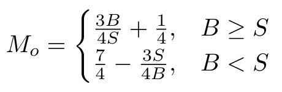
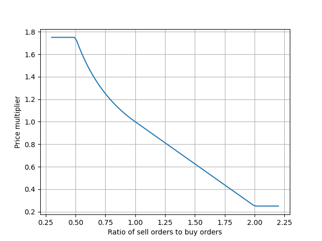
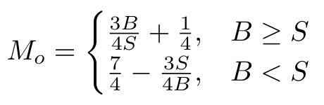
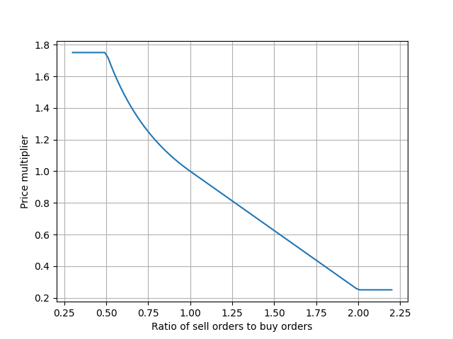
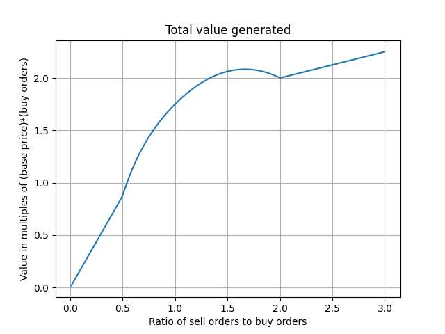
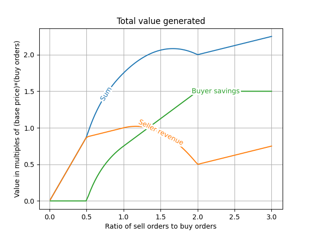
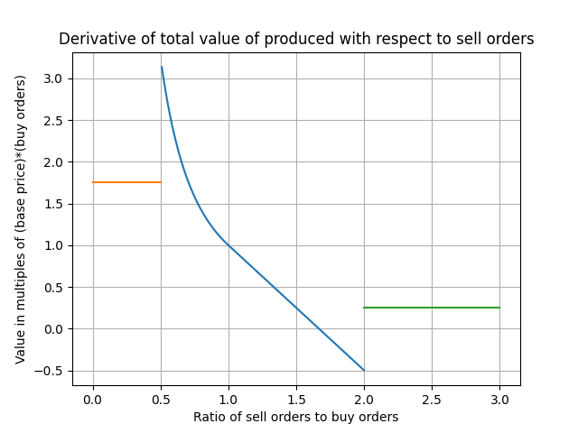
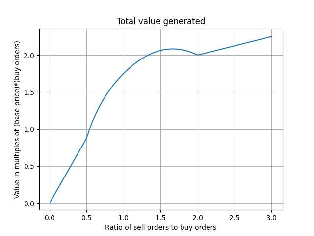
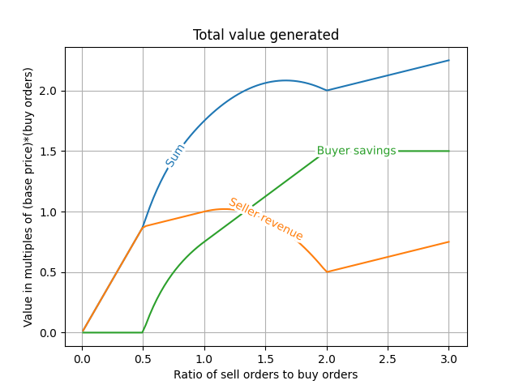
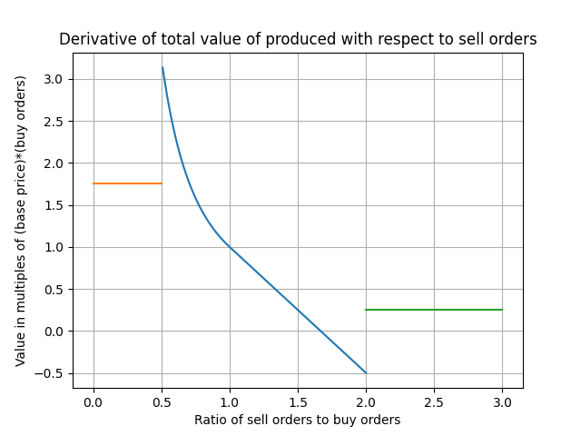

This is some analysis of the economics of Victoria 3 I did soon after release. It might be out of date.
When the ratio of sell orders to buy orders is between 0.5 and 2, the price of a good in a market is calculated as its base price multiplied by
=S, 7/4 - 3/4 * S/B if B<S">
where B is total buy orders for the good in the market, and S is total sell orders for the good in the market. As you might know, the price of a good can never go above twice its base price or below one fourth its base price.
I'm not sure if this is stated elsewhere, but this is the result of a polynomial fit on the prices I had in a save, with R^2=0.9997. The formula is also quite elegant, so I'm confident it is correct. 
=S, 7/4 - 3/4 * S/B if B<S">
where B is total buy orders for the good in the market, and S is total sell orders for the good in the market. As you might know, the price of a good can never go above twice its base price or below one fourth its base price.
I'm not sure if this is stated elsewhere, but this is the result of a polynomial fit on the prices I had in a save, with R^2=0.9997. The formula is also quite elegant, so I'm confident it is correct. 
Assuming no trade with other markets, one might consider the total value of a good produced in a market as the sum of total revenue to producers, and the
money saved by consumers compared to the price being twice the base price (i.e. production below half of consumption).

 The derivative of this might be interesting:
 As you can see, the value of each additional unit sold spikes after sell orders reach half of buy orders.

 The derivative of this might be interesting:
 As you can see, the value of each additional unit sold spikes after sell orders reach half of buy orders.